Galerija Proizvoda
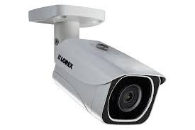
SmartCam Pro
- 1080p HD
- Detekcija pokreta, noćni vid, dvosmerna audio komunikacija
- Cloud Storage, mobilni pristup
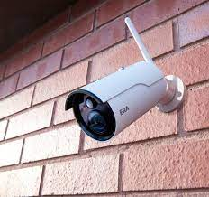
InSight 360
- 4K Ultra HD
- Panorama od 360 stepeni, automatsko praćenje objekata, bežična konekcija
- Integrisani alarmni sistem
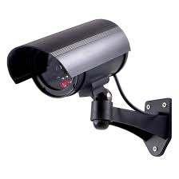
2K Quad HD
- 4K Ultra HD
- Visok nivo enkripcije, lako povezivanje sa pametnim uređajima, mogućnost podešavanja ugla kamere
- Privatni režim, obaveštenja na mobilni telefon
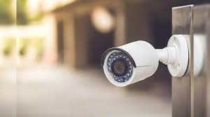
ProGuard XT
- 5MP Super HD
- Metalno kućište otporno na vremenske uslove, infracrveni senzori za noćni vid, detekcija lica
- Alarm i sirena, podrška za PoE (Power over Ethernet)
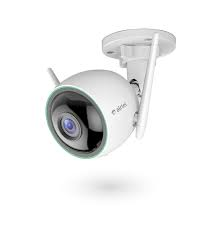
UltraWatch Outdoor
- 4K Ultra HD
- Anti-vandal dizajn, praćenje vozila, inteligentna analiza podataka
- Integracija sa sistemima za pristup, mogućnost snimanja na lokalnu memoriju
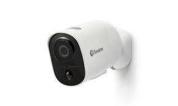
ExtremeGuard Pro
- 8MP 4K Ultra HD
- Napredni senzori pokreta, zaštita od prašine i vode (IP66), infracrveni filter za jasniji dan i noć
- Daljinski pristup preko mobilnih aplikacija, automatsko snimanje u slučaju detekcije neprijateljskih objekata
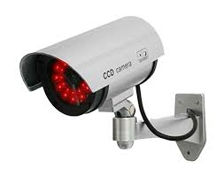
UltraView 4K Pro
- 4K Ultra HD
- Unutrašnja
- Automatsko praćenje objekata, detekcija lica, noćni vid
- Bežična povezanost, ugrađeni mikrofon, podrška za Cloud Storage
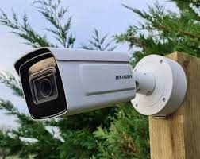
StealthGuard XT
- 8MP 4K Ultra HD
- Spoljna
- Otporna na vremenske uslove, alarmna sirena, infracrveni senzori za detekciju pokreta
- H.265 video kompresija, PoE (Power over Ethernet) podrška, daljinsko praćenje
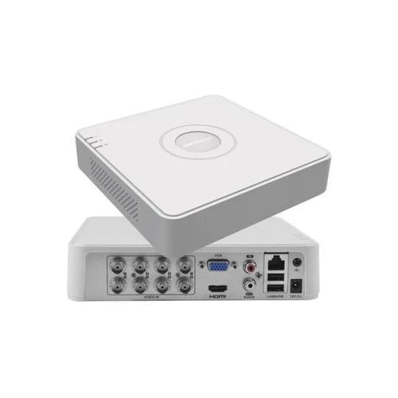
SecureWatch Pro 5000
- 16 Kanala
- 1080p Full HD
- 4TB
- Mobilni pristup, detekcija pokreta, podrška za više kamera, HDMI izlaz
- Cloud Backup, daljinsko upravljanje
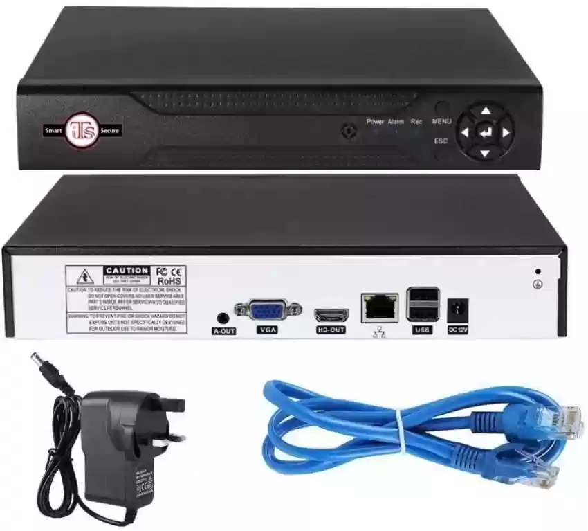
HDX-8
- 8 Kanala
- 720p HD
- 2TB
- P2P tehnologija za lakše povezivanje, e-mail obaveštenja, podrška za iOS i Android aplikacije
- Vreme i datum oznake na snimcima, jednostavna instalacija
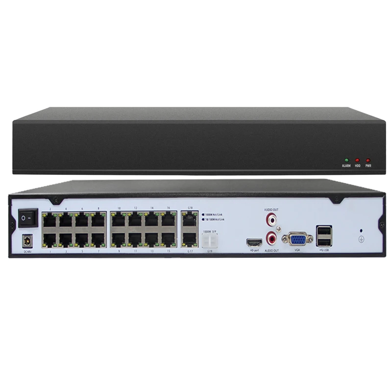
NetStream Pro 16X
- 16 Kanala
- 4K Ultra HD
- 8TB
- Mrežna podrška, analitika video sadržaja, daljinsko praćenje
- Integrisan alarmni sistem, podrška za više protokola
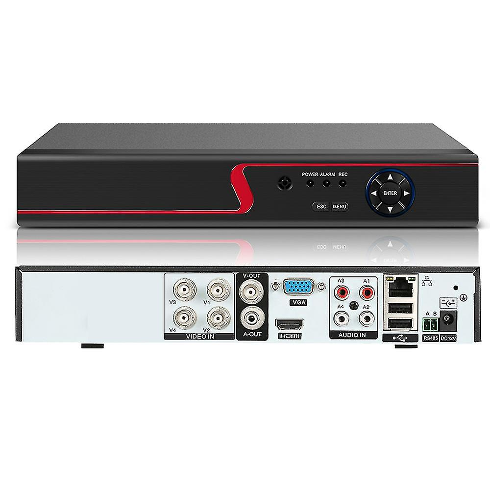
NVR-4K
- 4 Kanala
- 5MP Super HD
- 4TB
- Automatska detekcija kamera, laka integracija sa drugim sistemima, visokokvalitetni H.265 video kompresija
- PoE (Power over Ethernet) podrška, napredna analitika